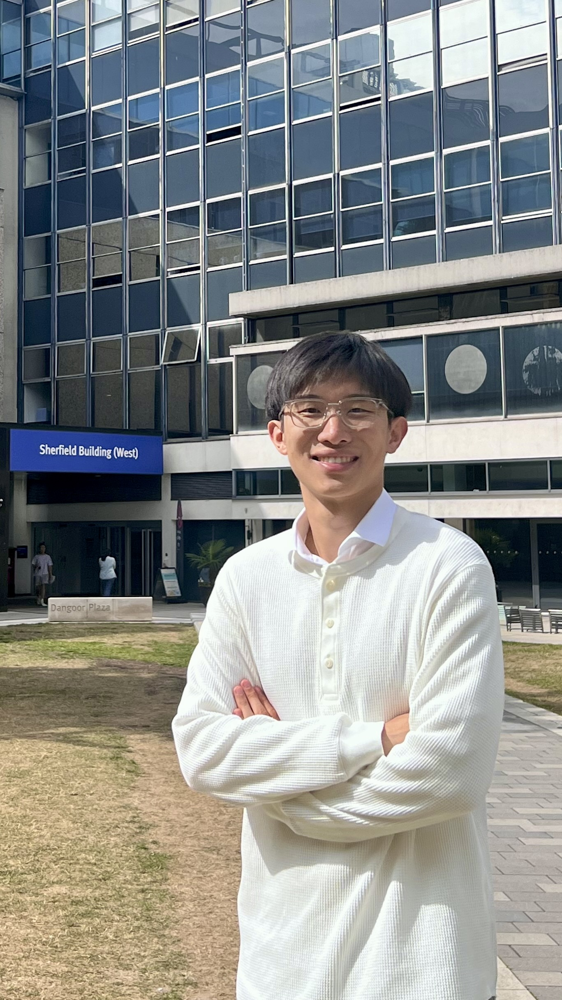
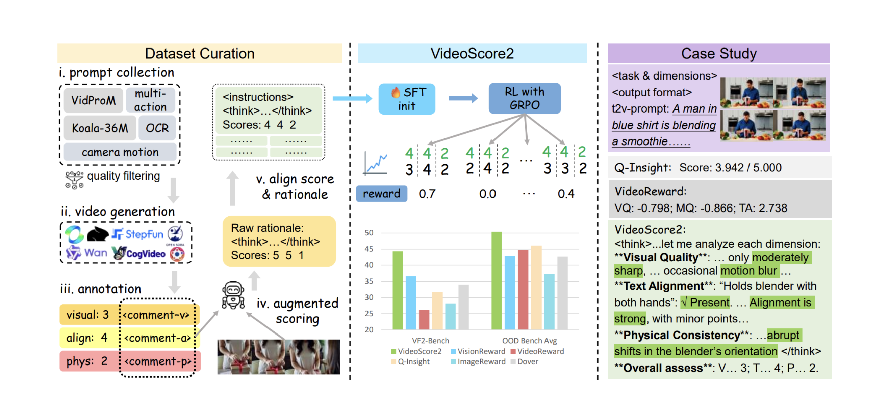
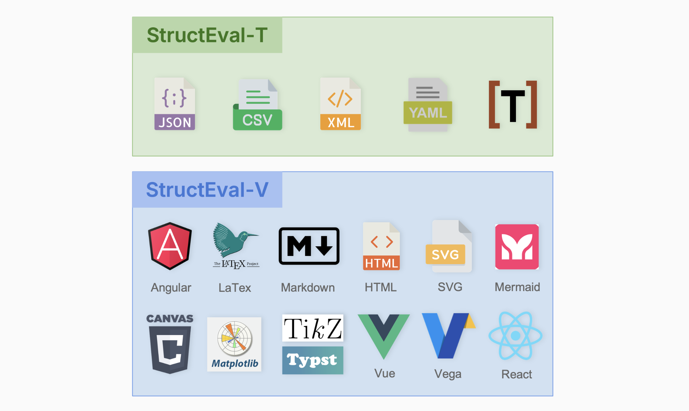
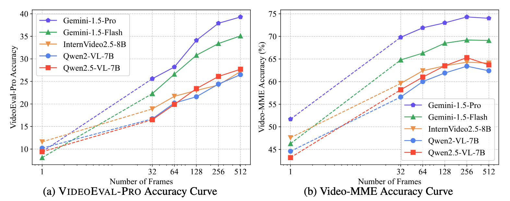
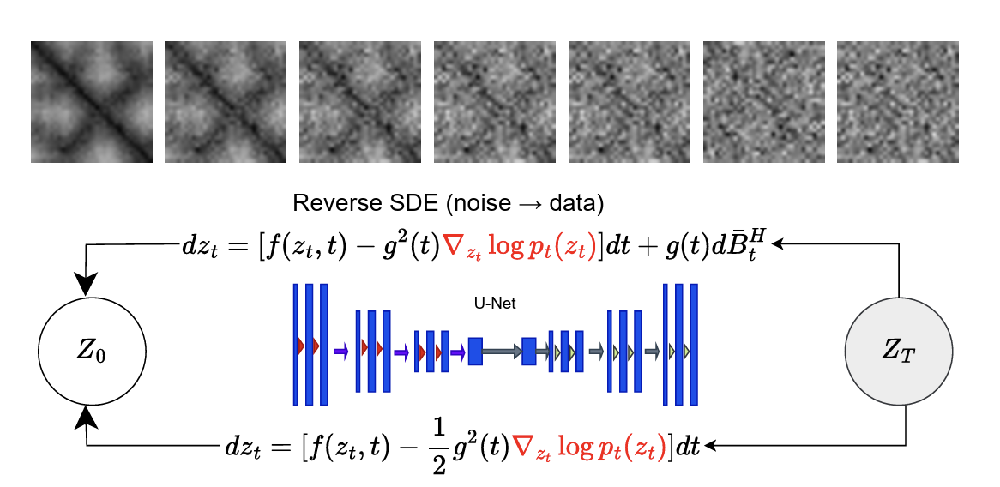
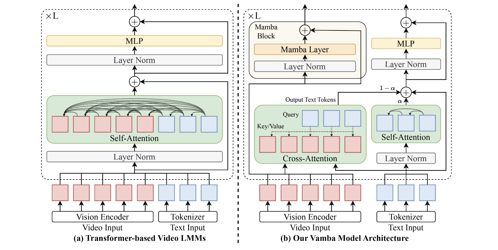

Wentao (Tony) Ma
@ BosonAI
|
 |


Introduction
The research areas I'm focusing on are Multi-Modal LLMs. I enjoy improving and exploring the ability of MLLMs and on Video and Audio, and applying them to other fields like Robotics.
Currently, I'm a MLE at @BosonAI, adviced by Alex Smola and Mu Li. We are developing efficient and expressive foundation models for audio understanding and generation.
Before that, I got my Master's degree from University of Toronto, supervised by Dr. Zhijing Jin. At the meantime,I worked closely with Wenhu Chen on the Video understanding field. I also studied at Imperial College London, supervised by Edward Johns. We validate and improve the Multi-Modal pattern learning ability of VLMs and apply them to Robotics. I got my bachelor's degree from Beihang University, School of ShenYuan Honors College, and my major is Computer Science.
I like photographing and I'm one of the members of Toronto Photo Walk(ToPW). I'm also interested in all kinds of sports, including snowboarding and tennis.
News
- [1/2026] BosonAI released the new Higgs-Audio-v2.5 model.
- [12/2025] Happy to share that StructEval has been accepted by TMLR 2025.
- [10/2025] We publish VideoScore2, a multi-dimensional and interpretable framework for synthesized video evaluation.
- [08/2025] Happy to share that ProT-GFDM has been accepted by Computational and Structural Biotechnology Journal.!
- [07/2025] Boson's Higgs-Audio-V2 is out, check it!
- [06/2025] Happy to share that Vamba has been accepted by ICCV 2025.
- [05/2025] Happy to share the structural generation benchmark 'StructEval' is published!
- [05/2025] We publish VideoEval-Pro, a more realistic and robust long video understanding benchmark.
- [05/2025] I join @BosonAI as a Machine Learning Engineer Intern!
- [04/2025] We publish ProT-GFDM, a generative fractional diffusion model for protein generation.
- [03/2025] We publish Vamba, an Efficient Long-Video understanding model.
- [01/2025] I become a Machine Learning Associate @ Vector Institute!
- [10/2024] I grduate from MSc Computing Program @ Imperial with Distinction!
- [09/2024] We introduce Paint2Plan, a VLM method enabling imitation leaning in Robotics.
- [06/2024] I present the 'LLM Echo Chamber' project on MLCSS @Imperial.
- [08/2023] I become a AWS Certified Solutions Architect!
- [05/2023] I finish my graduation design at Beihang university with a paper published.
- [01/2023] I finished interning with the Multi-Obj-Tracking project at Sony.
- [06/2022] I join TikTok as an intern.
Publications

|
Higgs-Audio V2.5 Voice Model Wentao Ma(Core Contributer), Boson AI Team Technical Blog |
|  |
VideoScore2: Think before You Score in Generative Video Evaluation Xuan He*, Dongfu Jiang*, Ping Nie, Minghao Liu, Wentao Ma, Junru Lin, and Others Preprint |
|  |
StructEval: Benchmarking LLMs' Capabilities to Generate Structural Outputs Jialin Yang*, Dongfu Jiang*, Lipeng He, Sherman Siu, Wentao Ma, Zhiheng Lyu, and Others Transactions on Machine Learning Research(TMLR), 2025 |
|  |
VideoEval-Pro: Robust and Realistic Long Video Understanding Evaluation Wentao Ma*, Weiming Ren*, Yiming Jia, Zhuofeng Li, Ping Nie, Ge Zhang, Wenhu Chen Preprint |
|  |
ProT-GFDM: A Generative Fractional Diffusion Model for Protein Generation Xiao Liang*, Wentao Ma*, Eric Paquet, Herna Lydia Viktor, Wojtek Michalowski Computational and Structural Biotechnology Journal(CSBJ), 2025 |
|  |
Vamba: Understanding Hour-Long Videos with Hybrid Mamba-Transformers Weiming Ren, Wentao Ma, Huan Yang, Cong Wei, Ge Zhang, Wenhu Chen International Conference on Computer Vision (ICCV), 2025 |

|
Paint2Plan: Image Painting Enables Imitation Learning with VLMs Tony Ma, Teyun Kwon, Edward Johns Preprint, 2024 |

|
LLM Echo Chamber: personalized and automated disinformation Tony Ma, Yves-Alexandre de Montjoye Machine Leanrning and Cyber Security Symposium (MLCSS), Imperial, 2024 |

|
Boosting Transferability of Adversarial Patches with Visual Relations Tony Ma, Songze Li, Yisong Xiao, Shunchang Liu Conference on Computer Vision and Pattern Recognition (CVPR), AdvVision Workshop, 2023 |
Experience
|
Boson AI Machine Learning Engineer Alignment for Audio Understanding and Generation models May.2025 - Present [website] |
|
|
Vector Institute Machine Learning Associate Designed a Geo-filtering RAG system with Global Spatial Technology Solutions(GSTS) Jan.2025 - Apr.2025 [website] |
|
|
|
SONY Edge AI Engineer Intern Video Object Tracking / Model Qutilization / Edge Computing |
|
TikTok Software Engineer Intern IOS developing for TikTok Pay May.2022 - Aug.2022 [website] |
|
Selected Certifications and Awards
| AWS Certified Solution Architect (Associate) --- 2026 |
| Mitacs Research Funding --- 2025-2026 |
| Distinction @ Imperial College London --- 2024 |
| Outstanding Graduates --- 2023 |
| Scholarship for Academic Excellence --- 2020/2021/2022 |
| Scholarship for Discipline Competitions --- 2020/2021/2022 |
| Excellent Student Leader --- 2020 |
Community Serving
| Reviewer: ICLR workshops |

© Wentao Ma | Template From Dr.YueMing Jin | Last updated: Jan 2026